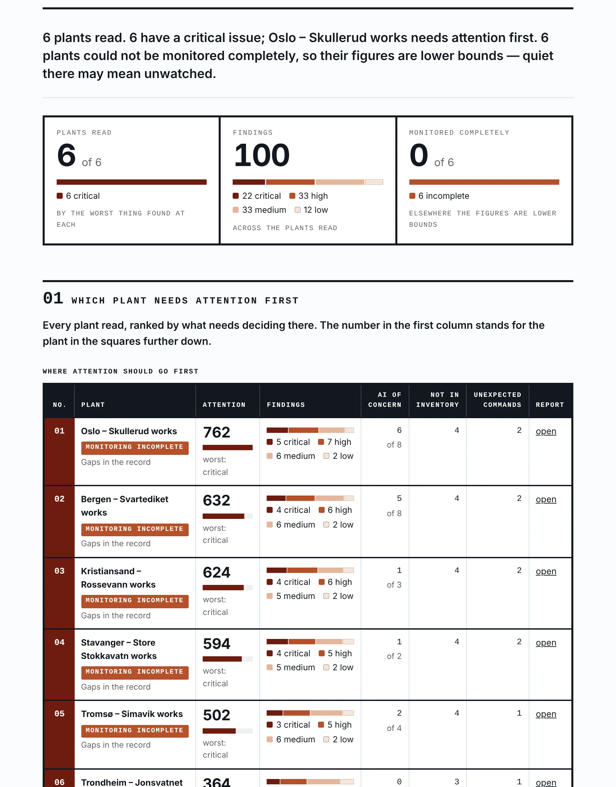

Dyp innsikt i OT- og IT-nettverk
Vit hva som skjedde i anleggets nettverk, og hva som bør gjøres med det.
Historian leser nettverkshistorikken en sensor har samlet inn på anlegget, og gjør den om til en rapport og en liste over ting å handle på.
- 3
- visninger av samme rapport: ledelsen, OT-eiere og de som gjør jobben
- 22
- indikatorer på AI-agentaktivitet i katalogen
- 3
- lister å handle på: risikoer, hendelser og oppgaver
- 0
- skriveoperasjoner mot anleggets nettverk
01 Den bare lytter
Ingenting installeres på kontrollerne, og ingenting sendes til dem.
Et opptakspunkt på anlegget tar en kopi av trafikken og leverer den til anleggets nettverkssensor. Historian stiller sensoren spørsmål med en konto som bare kan lese. Den skriver aldri til sensoren eller nettverket, og den ber aldri om passordene den ser passere, bare hvor mange det var.
- Én nettverkssensor per anlegg, hver med anleggets egen historikk
- Sensoren er Malcolm, den åpne programvaren for analyse av nettverkstrafikk, og forblir et eget system
- Ingen port må åpnes mot internett: sensorene og Historian møtes på et privat nettverk
- Kjører på egen server
- Anleggets nettverk
- Opptakspunkt
- Nettverkssensor
- Historian
- Risikoer, hendelser, oppgaver
02 Kan vi stole på tallene?
Rapporten begynner med å si hvor fullstendig anlegget kunne observeres.
Et anlegg som er stille fordi sensoren var nede, må aldri leses som et anlegg der ingenting skjedde. Derfor åpner hver rapport med hva sensorene registrerte, hvor hullene er, og om tallene under er fullstendige eller nedre grenser.
- Opptakspunkter som leverer, og når hvert av dem sist gjorde det
- Hull i registreringen, angitt på minuttet
- Hvis sensoren avviser et spørsmål, bygges rapporten likevel og sier hva som mangler

03 Funn, rangert etter alvorlighet
Hvert funn kommer med hvorfor det betyr noe, hva som bør gjøres, og bevisene.
Et funn er noe som er observert i perioden og som krever en beslutning. De verste kommer først, og hvert funn kan spores til registreringene bak.
- Passord sendt i klartekst, kontakt med kjente ondsinnede adresser, enheter som ikke står i inventaret
- Trender mot perioden før, så det går an å se om risikoen går opp eller ned
- PDF, Excel og PowerPoint fra hver side

04 Én rapport, tre lesere
Ledelsen og OT-eierne stiller ulike spørsmål. Hver får sin egen visning.
Ledersammendraget svarer på én side. OT-eierens visning går helt ned til kontrolleren. Den fulle rapporten har bevisene for den som gjør jobben.
Spørsmål for ledelsen
- Går risikoen opp eller ned?
- Vet vi hva som er på nettverket vårt?
- Er nettverkssonene adskilt?
- Snakker anleggets enheter med internett?
- Hvem har fjerntilgang til anlegget?
- Ble kjente angripere sett?
- Ble skadevare flyttet over nettverket?
- Hvilken angriperatferd ble observert, uttrykt i MITRE ATT&CK?
Spørsmål for OT-eiere
- Hvem sendte kommandoer til kontrollerne?
- Hvem snakker med hver kontroller?
- Hva er endret siden perioden før?
- Kommuniserer kontrollerne uten feil?
- Hvilke industriprotokoller finnes på nettverket?
- Hva er kjent om hver enhet på anlegget?
- Hvilke svake eller utdaterte praksiser er i bruk?
- Hvilken programvare og hvilke versjoner ble sett?

05 AI-agenter på nettverket
Se hvilke maskiner som oppfører seg som et program og ikke som et menneske.
AI-agenter er på vei inn i kontor- og anleggsnettverk, godkjent eller ikke. Historian samler hver maskin som viser en indikator på AI-aktivitet, hva den gjorde på nettverket, og om den står på listen over godkjente.
- En katalog over indikatorer, og hvilke hver maskin viste
- Maskiner som også handlet på nettverket, merkes som bekymringsfulle
- Grupper av maskiner som arbeider i takt

06 Konklusjoner
Rapporten ender i tre lister som noen kan handle på.
Risikoer går til et register, hendelser til en SOC og oppgaver til en kø. Hver vurdering har med regelen som ga den, fordi dette er første lesninger av én periode med trafikk, og siden sier det.
- Send de tre listene til et SpaceRisk-register med én knapp. Ingenting sendes før den trykkes
- Å sende på nytt oppdaterer det som ble sendt før, og lager aldri en kopi til
- Eksport til SIEM (OCSF) og til Jira, ServiceNow eller en postkasse, i tillegg til Excel og PowerPoint
Til risikoregisteret
Risikoer
En vedvarende svakhet, vurdert som sannsynlighet ganger konsekvens, hver fra 1 til 5, og gitt til en eier.
Til SOC
Hendelser
Noe som har skjedd og må håndteres nå.
Til en kø
Oppgaver
Ett stykke arbeid med en kø, en frist og en måte å se når det er ferdig på.

07 Alle anlegg samtidig
Ranger anleggene etter hva som må avgjøres.
Med mer enn ett anlegg vises de side om side: hvilket som trenger oppmerksomhet først, hva som gjelder flere av dem mot hva som gjelder ett, og hvilke som ikke kunne overvåkes fullstendig.
- Hver rad åpner anleggets egen rapport
- Funn som deles av flere anlegg, vises samlet
- Uovervåket vises aldri som stille

Se Historian lese deres eget nettverk.
Fortell oss om anleggene, så viser vi rapporten først på simulerte data og deretter på deres egne.